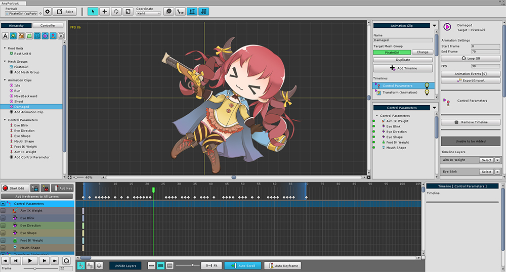
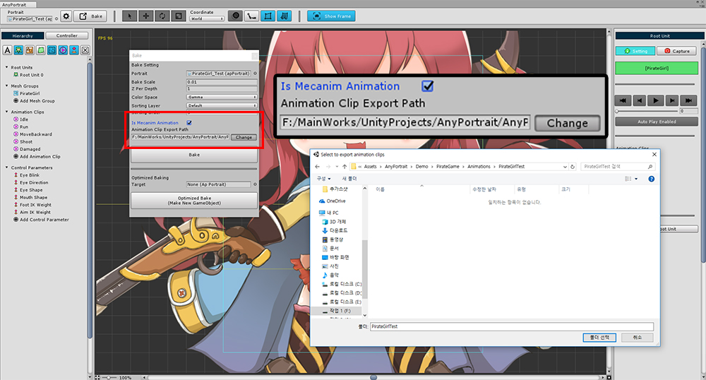
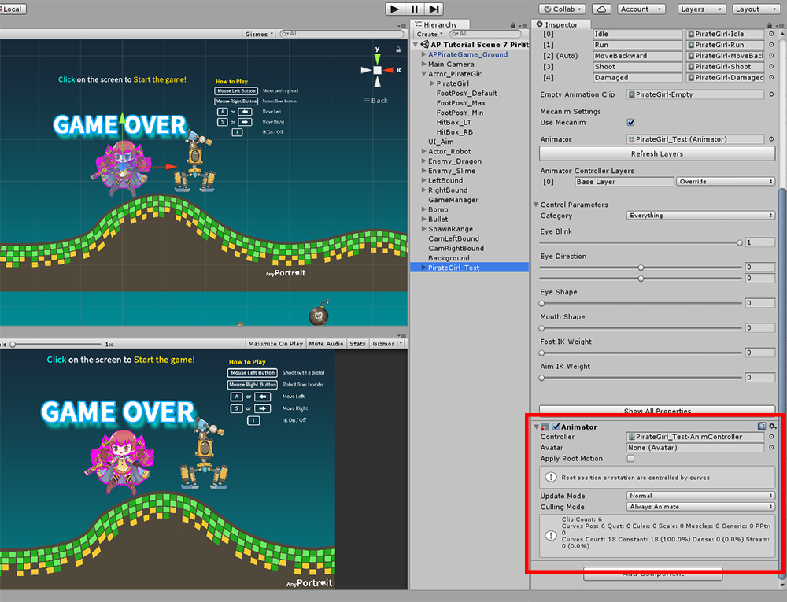
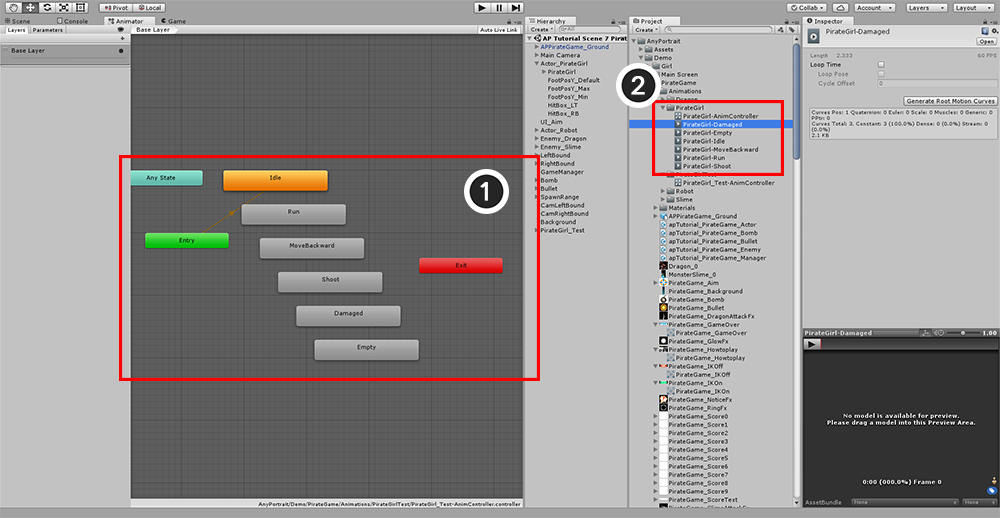
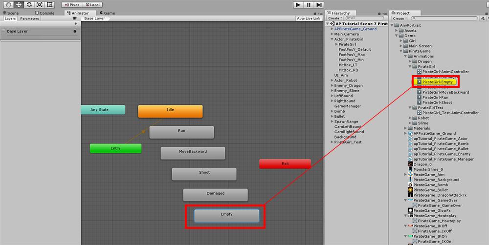
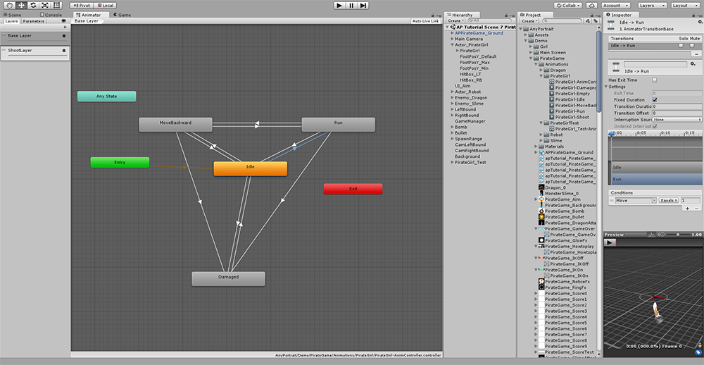
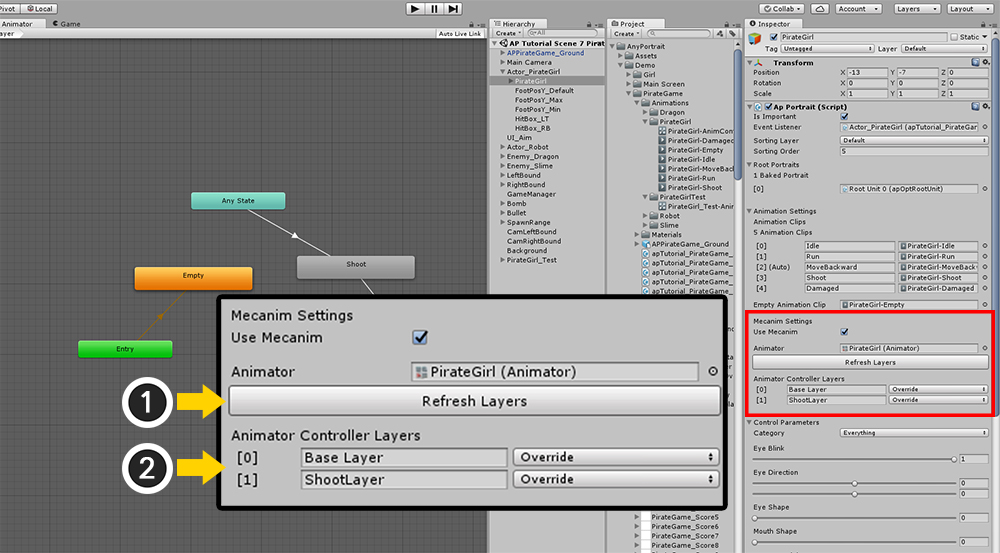

AnyPortrait > Manual > Using Mecanim
Using Mecanim
1.0.4
When creating games, many game producers use state machines to create animations.
In Unity, the Mecanim is responsible for the development process.
Unlike the traditional control of animation in a script, animation switching works as a state machine.
From version 1.0.4, AnyPortrait also supports animation control with Unity Mecanim.
The Mecanim system using Animator components is basically the best for Unity's Humanoid 3D model.
Therefore, AnyPortrait is not compatible with all features of Mecanim, so you should refer to this point.

First, create animations in AnyPortrait.
You can make it the same as the existing method.

Check "Is Mecanim Animation" in the Bake dialog box.
Because AnyPortrait converts animations into Animation Clips and saves them, you need to Set the Path where those assets will be stored.

Saving in a way that uses Mecanim automatically adds an Animator component.
When an Animator component is added for the first time, an Animation Controller is automatically created.

When you open the Animator editor, you can see that (1) the states are created automatically.
(2) Animation clips that are motion of each state are created and saved in the set path.

At this time, there is something you should be aware of.
AnyPortrait does not recognize Mecanim's "Empty State".
Therefore, you must use a state that contains a generated Animation Clip named "Empty".
When you want to use "Empty State", make sure to use state Animation Clip named Empty as Motion.

Edit the Animator by setting the Transition etc. in the Animator editor.
(Sub-State Machine and Blend Tree are not officially supported.)
Adding layers to Animator
Multiple animations can be set up as layers and run simultaneously.
It is possible to animate such as shooting while running or jumping.
AnyPortrait's existing animation script also supports layer functionality, and so is Mecanim.
You can add and configure layers in the following ways:

In Animator, add layers and configure the state machine.
Basically, it's a good idea to create an Empty state for "the state of the layer not merging".
As mentioned above, create a state using an Animation Clip named Empty.
Also set Blending and Weight.

Check the Mecanim Settings items in the apPortrait Inspector.
You need to modify the Mecanim information here.
(1) Press the Refresh Layers button.
(2) You can see that the layer you just created is added.
The Refresh Layers button should always be pressed if a layer is added, deleted, or changed in Blending mode.
Points to note when using Mecanim
There are precautions when connecting AnyPortrait with Mecanim.
This includes the above.
- You can not use Mecanim's Empty State. If necessary, you should use "Empty" Animation Clip, which is created as Motion, as state.
- Sub-State Machine and Blend Tree are not supported.
- After linking with Mecanim, you can not use the animation script function provided by AnyPortrait. Refer to Animator and call its functions.
- If you have added or changed an animation layer, press the Refresh Layers button in the Inspector to refresh the layer information.
- When you want to merge and add another animation to an existing animation as a layer, there should not be a timeline layer for objects that should not be merged.
(For example, if the motion is running + upper body motion, the "upper body motion" animation should not have a timeline layer for leg objects.)
- When controlling animation with Mecanim, the position of apPortrait is fixed to (0, 0, 0). We recommend that you create a new GameObject and place it on top to control the Transform.